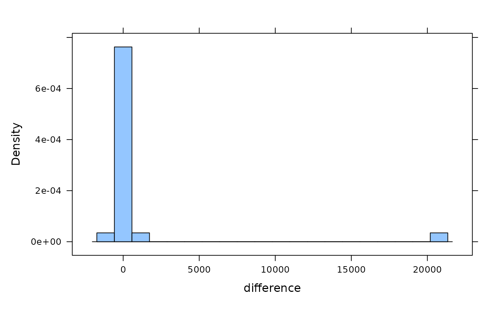

Sexual Conflict
SexualSelection.RdNumber of species in each of two taxa in closely related taxon pairings and
the difference between the two groups. One taxon has multiple matings
(polyandrous.species) and one has only single matings
(monandrous.species).
Format
A data frame with 25 observations on the following 4 variables.
- polyandrous.species
a numeric vector
- monandrous.species
a numeric vector
- difference
a numeric vector
- taxon.pair
identifier
Source
Arnqvist, G., M. Edvardsson, U. Friberg, and T. Nilsson. 2000. Sexual conflict promotes speciation in insects. Proceedings of the National Academy of Sciences (USA) 97: 10460-10464.
Examples
SexualSelection
#> polyandrous.species monandrous.species difference taxon.pair
#> 1 53 10 43 A
#> 2 73 120 -47 B
#> 3 228 74 154 C
#> 4 353 289 64 D
#> 5 157 30 127 E
#> 6 300 4 296 F
#> 7 34 18 16 G
#> 8 3400 3500 -100 H
#> 9 20 1000 -980 I
#> 10 196 486 -290 J
#> 11 1750 660 1090 K
#> 12 55 63 -8 L
#> 13 37 115 -78 M
#> 14 100 30 70 N
#> 15 21000 60 20940 O
#> 16 37 40 -3 P
#> 17 7 5 2 Q
#> 18 15 7 8 R
#> 19 18 6 12 S
#> 20 240 13 227 T
#> 21 15 14 1 U
#> 22 77 16 61 V
#> 23 15 14 1 W
#> 24 85 6 79 X
#> 25 86 8 78 Y
histogram(~ difference, SexualSelection, n = 20)

hist(SexualSelection$difference, breaks = 20)
# Calculate the number of tests and the number of negative tests
(n <- length(SexualSelection$difference))
#> [1] 25
(n.neg <- sum(SexualSelection$difference < 0))
#> [1] 7
2 * pbinom(q = n.neg, size = n, prob = 0.5)
#> [1] 0.04328525
# With a binomial test
binom.test(n.neg, n, p = 0.5)
#>
#>
#>
#> data: n.neg out of 25L
#> number of successes = 7, number of trials = 25, p-value = 0.04329
#> alternative hypothesis: true probability of success is not equal to 0.5
#> 95 percent confidence interval:
#> 0.1207167 0.4938768
#> sample estimates:
#> probability of success
#> 0.28
#>